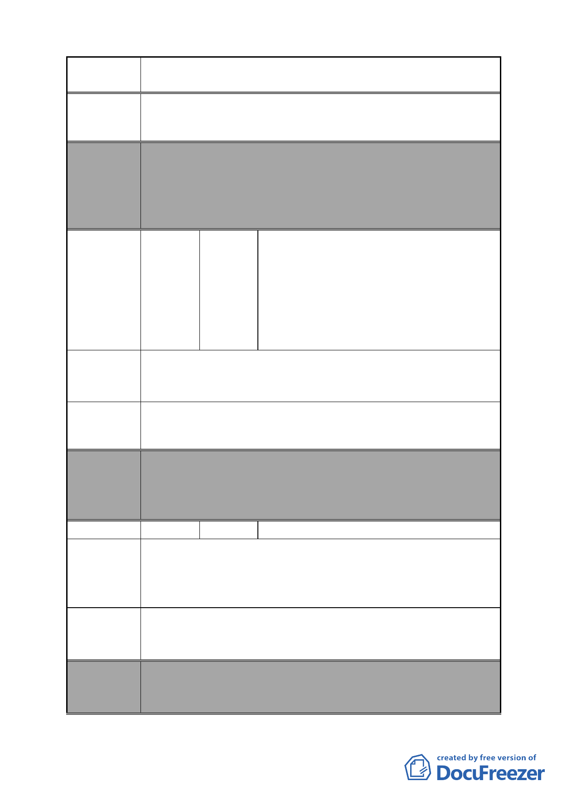

案名
變更臺北市南港區鐵路地下化沿線土地主要計畫案
一容積，商三使用，請都市計畫委員會快速審核通過，讓我
們可以再去申請都市更新都更容積獎勵辦法申請。
委員會
決議
編號
陳情理由
建議辦法
本案除文字誤繕應再作修正外，其餘依市府本次會議所送修
正計畫書內容通過。
（依市府本次會議說明，因該陳情地點權屬多為私有且產權
複雜，有關分區變更事宜仍宜由相關權利關係人先整合意
願，再依規定提送計畫書予市府，故不納入本計畫範圍）。
吳俊德、呂怡軒、黃溪樑、郭金龍、林凰
燕、黃林金治、郭信嵩、黃偉誠、羅淑娥、
張秀玉、翁嘉銘、郭金漢、郭秋月、劉明
20 陳情人 珠、陳恬靜、郭孟豪、郭豐明、黃慧敏、
王志嫘、陳敏鋒黃珮綺、郭忠信、郭營次、
蔡福源、弼晟企業股份有限公司（法定代
理人：施霖）、李雅慧、鄭蓮娜
陳情地點：昆陽街 60 巷 6 號、6-1 號、8 號、8-1 號。
環華世貿新銳大樓於民國 86 年才建物登記，10 年房屋而已，
若納入重劃增加市地重劃費用。
本地段地號已興建大樓，請准予剔除重劃。
委員會
決議
編號
陳情理由
建議辦法
委員會
決議
本案除文字誤繕應再作修正外，其餘依市府本次會議所送修
正計畫書內容通過。
（市府本次會議所送修正計畫書，業將陳情地點剔除於市地
重劃範圍）
21 陳情人 闕國安
陳情地點：南港區昆陽街 96 號。
因道路拓寬 5 公尺，以致房屋牆壁樓梯拆除，需花大筆錢填
修，不然無法居住，政府所補償之他地土地，對於我們居民
無濟於事，我們也沒有多餘的錢維修及搬遷。
1.現鐵路地下化塞車情況應可獲改善，是否可不必拓寬。
2.可否限制道路上進停汽機車，以便空出空間。
3.可否徵詢有意願建商改建規劃。
本案除文字誤繕應再作修正外，其餘依市府本次會議所送修
正計畫書內容通過。
（市府本次會議所送修正計畫書，業將陳情地點剔除於市地
- 33 -